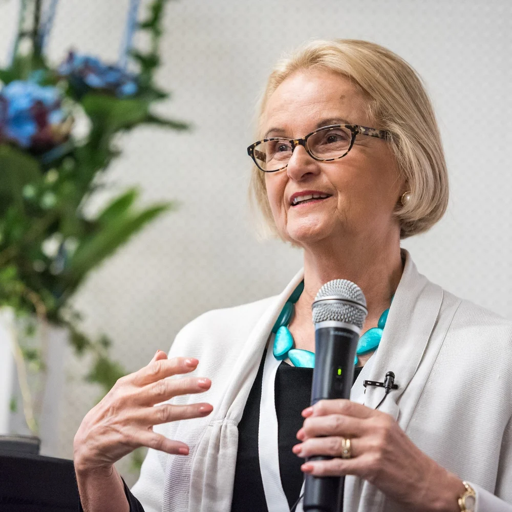
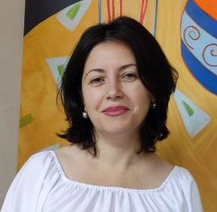

Ksenia Dokuchaeva
Montessori Educator & Consultant
School management, team 0-6 development, admission and onboarding, family community building.
Planning and organizing the Montessori environment and didactic materials, hiring and developing teachers, leading parent–infant and parent–toddler programs.
Creating Montessori-inspired home environments, navigating communication and developmental challenges.
April 28, 2026
"I am honored to recommend Ksenia Dokuchaeva as one of the finest and most talented Montessori school leaders I know. Her work in Moscow and in Bali has been extraordinary from a leadership perspective as well as her understanding of Montessori pedagogy at all levels of childhood. She would bring enormous strength and success to her work in any of the Montessori environments she is interested in working with. I am happy to also speak to anyone who is interesting in hearing more about her from me."

"Your dedication, warmth, and unwavering support as our Parent Teacher Association President have meant so much to our school community. Your leadership was not only seen in the events you helped organize or the initiatives you supported, but also felt in the kindness, care, and genuine connection you brought to every meeting and conversation." Read more…
"I continue to be amazed by Ksenia's deep belief in people and her ability to recognize and develop their strengths. Her energy and dedication to helping others build human-centered, nonviolent educational environments are unwavering. Ksenia applies the principles of Montessori, mindfulness, and ethical leadership in every aspect of her work — and generously shares these tools with others." Read more…

"Throughout our partnership, Ksenia played a pivotal role in team leadership, curriculum development, and maintaining the highest standards of educational quality. Her approach is a rare combination of big-picture vision and meticulous attention to detail. She is organized, punctual, and fully committed to excellence in everything she undertakes." Read more…
"One of Ksenia's many strengths lies in community building. She designed and implemented an effective enrollment and onboarding process for new families in both the preschool and elementary programs. Her approach to family adaptation and inclusion was thoughtful, systematic, and aligned with our values." Read more…
"What has always impressed me about Ksenia is her ability to apply Montessori principles not only to children but also to adults — parents and colleagues. Being around her naturally boosts one's confidence in their own potential." Read more…
"Mrs. Ksenia's passion for education is matched by her kindness and warmth. She is always open to sharing her insights and experiences, and I personally have benefited greatly from our conversations — especially in understanding the development of children aged 0–3 within the Montessori philosophy." Read more…
Whether you are a parent, an educator or a school —
I would love to hear from you.